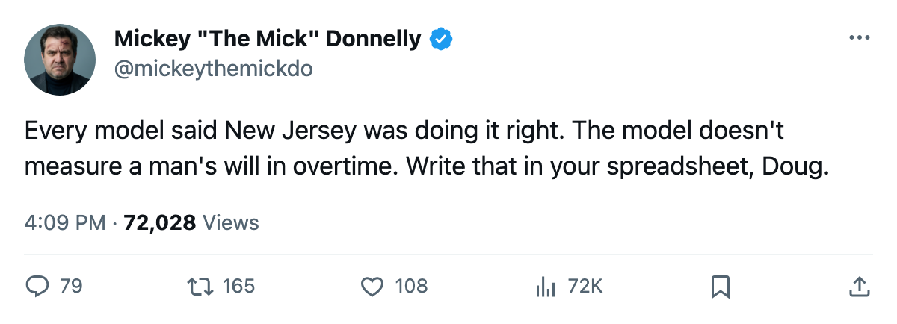
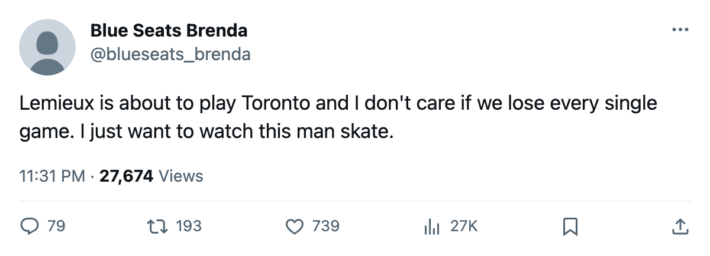

WHO LOST NJ THE SERIES: THE MODEL BROKE AND THE OLD MAN WASN'T DONE
The most profitable franchise in hockey, the best cost per point in the league, the club every boardroom pointed to: eliminated in 6 by a 24-win team led by a 39-year-old
 Mickey "The Mick" DonnellyColumnist, ex-goalie · The Penalty Box
Mickey "The Mick" DonnellyColumnist, ex-goalie · The Penalty Box
A 24-win team led by a 39-year-old ended the most profitable franchise in hockey this week. Not close. Not lucky. Five of six games were decided by one goal and the last one went to overtime.
 Pittsburgh Penguins eliminated
Pittsburgh Penguins eliminated  New Jersey Devils 4 games to 2, closing it out in overtime at their own rink. The 7th seed beat the 2nd. The 2nd had 114 points, 39 wins, and a payroll that generated more profit than any other club in this league.
New Jersey Devils 4 games to 2, closing it out in overtime at their own rink. The 7th seed beat the 2nd. The 2nd had 114 points, 39 wins, and a payroll that generated more profit than any other club in this league.
The spreadsheet had it wrong
Doug Reimer's people love a franchise that spends efficiently. Here is NJ's business card: payroll $45.15M, revenue $98.74M, profit $45.96M, cost per point $0.40M. The best in hockey on every metric that spreadsheet cares about. Second in the East. The model franchise. The kind you read about in boardrooms and point to when a GM asks why your payroll isn't flat.
The model doesn't account for  Mario Lemieux85.
Mario Lemieux85.
The old man
Lemieux is 39. He scored 117 points in 73 games this season. In these playoffs: 2 goals, 6 assists, 6 games. Eric Meloche75, last season's Calder winner, has 6 points.  Martin Straka83 has 4.
Martin Straka83 has 4.  Johan Hedberg86 is 3-2 with a 2.00 GAA and a .907 save percentage.
Johan Hedberg86 is 3-2 with a 2.00 GAA and a .907 save percentage.
Pittsburgh Penguins went 24-34-11 in the regular season. Their club morale sits at 95.4, tied for the 4th highest in the league. They were a happy room and a bad team all winter, and they were a good enough room to beat a 2nd seed in 6. This desk didn't write about them until the morning after. The record demanded it and the record doesn't care who showed up first.
Brodeur
 Martin Brodeur95 went 2-3 with a 1.80 GAA and a .910 save percentage. Those are fine numbers. He still lost the series. The numbers don't tell you why a 2nd seed with the best business model in hockey goes home in 6 to a team that lost 34 games. You want to know why, ask the man who had to stop one more puck in overtime and couldn't.
Martin Brodeur95 went 2-3 with a 1.80 GAA and a .910 save percentage. Those are fine numbers. He still lost the series. The numbers don't tell you why a 2nd seed with the best business model in hockey goes home in 6 to a team that lost 34 games. You want to know why, ask the man who had to stop one more puck in overtime and couldn't.
What's next
PIT plays  Toronto Maple Leafs starting tomorrow. Toronto went 4-0-0 against Pittsburgh this season and outscored them 20-9. Toronto is 59-13-5 with 133 points and
Toronto Maple Leafs starting tomorrow. Toronto went 4-0-0 against Pittsburgh this season and outscored them 20-9. Toronto is 59-13-5 with 133 points and  Roberto Luongo95 in net with a 1.41 GAA and a .963 this spring. Toronto has the most wins, the most points, the highest revenue in hockey at $104.02M, and a $94 ticket that still fills 17,713 seats every night.
Roberto Luongo95 in net with a 1.41 GAA and a .963 this spring. Toronto has the most wins, the most points, the highest revenue in hockey at $104.02M, and a $94 ticket that still fills 17,713 seats every night.
PIT will probably lose this series. They went 0-3-1 against Toronto in the regular season. But they went 24-34-11, beat the team that made the most money in this league, and Mario Lemieux had his hand in it at 39 years old in front of his own building. The spreadsheet couldn't predict that, and this desk should have been writing about it all spring.

